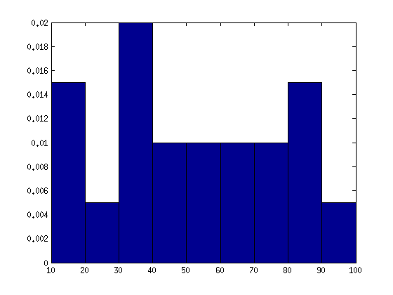
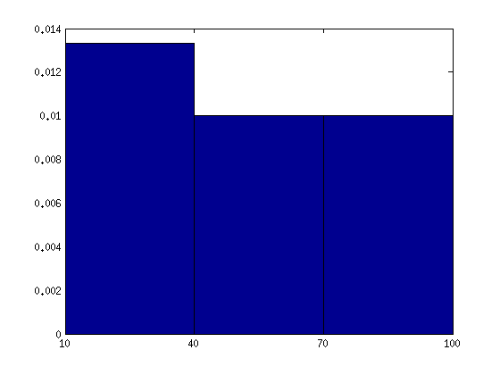
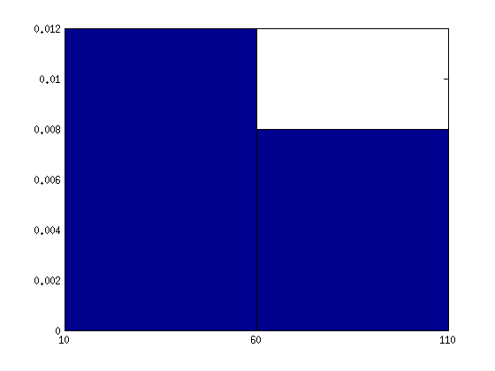

Lab 6, Histogram
Shanshan Zhang, tuf14438@temple.edu Learn to plot a histogram according to the definition in the textbook.
Contents
Data
Draw histograms for a sample with discrete numbers: [12, 15, 34, 24, 35, 67, 89, 13, 45, 36, 89, 46, 97, 34, 56, 78, 65, 83, 59, 74]
X = [12, 15, 34, 24, 35, 67, 89, 13, 45, 36, 89, 46, 97, 34, 56, 78, 65, 83, 59, 74]; N = length(X);
Histogram with bin width 10
Let the bin width be 10, the first bin starts at 10;
%[..., a(i), a(i+1), ...] a(i)<=Bi<a(i+1); %[10,20),[20,30),...,[90,100]; bin1 = [10,20,30,40,50,60,70,80,90,100]; bin1 = 10:10:100; % Alternatively, you can use this line to specify the bins. width1 = ones(1,10)*10; % Define the width bincount1 = histc(X,bin1); % Calculate the count of numbers falling in each bin. height1 = bincount1./(N*width1); % Calculate the height of each bin. bar(bin1,height1,'histc'); % Draw the histogram. xlim([10,100]); % Specify your scope of view.
Histogram with bin width 30
Let the bin width be 30, the first bin starts at 10;
%[..., a(i), a(i+1), ...] a(i)<=Bi<a(i+1); %[10,40),[40,70),[70,100]; bin2 = [10,40,70,100]; width2 = ones(1,4)*30; bincount2 = histc(X,bin2); height2 = bincount2./(N*width2); bar(bin2,height2,'histc'); xlim([10,100]);
Histogram with bin width 50
Let the bin width be 50, the first bin starts at 10;
%[..., a(i), a(i+1), ...] a(i)<=Bi<a(i+1); %[10,60),[60,110]; bin3 = [10,60,110]; width3 = ones(1,3)*50; bincount3 = histc(X,bin3); height3 = bincount3./(N*width3); bar(bin3,height3,'histc'); xlim([10,110]);
Assignments
Question. Plot the histogram in Matlab for Homework Q3, with different bin width [10, 20, 30]
Question. Plot the histogram in Matlab for the ratings of 'education' in the 'cities' data, choose different bin width. (Hint, please refer to Lab5 for the way to load cities data)